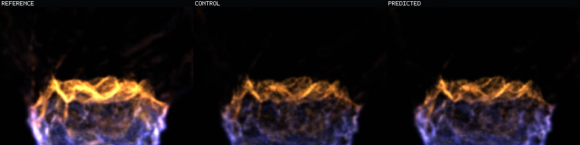
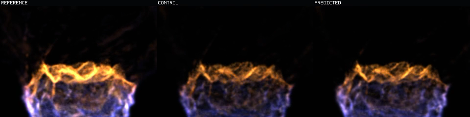
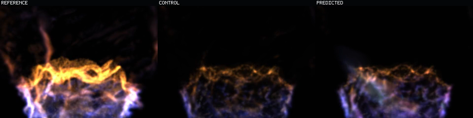
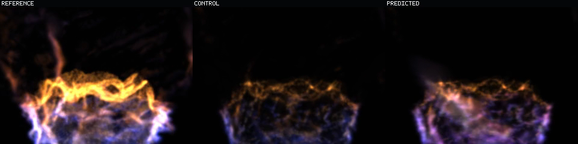
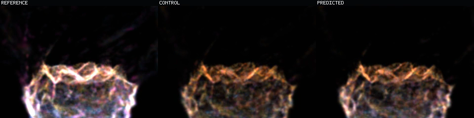
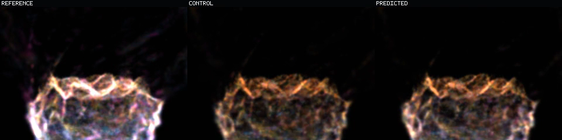
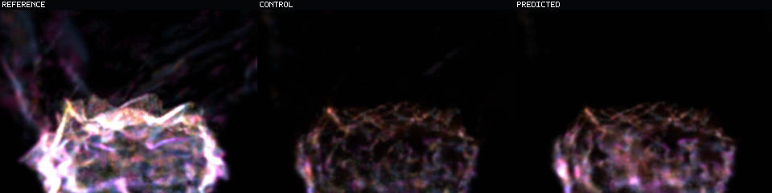
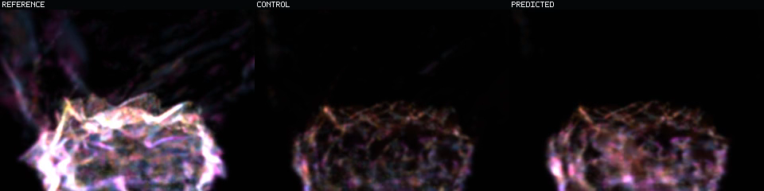
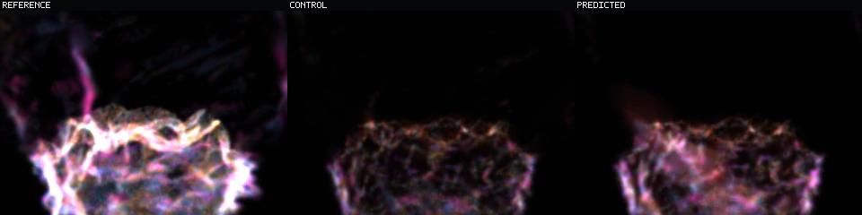
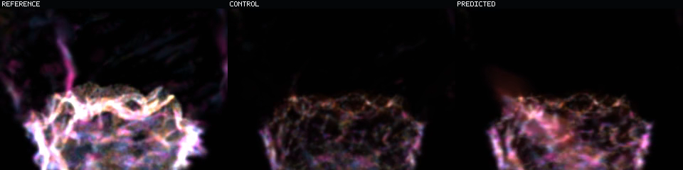

Question: Does rebuilding protected H12 exposure from the current model before every epoch move the late recurrent-collapse wall?
State answer: no. Transport persistent loss moves from step 58 to 53 and birth from 58 to 45.
Energy answer: yes. Visible-energy retention rises in all aggregate and final-quarter cohorts.
Interpretation: the online model is hotter but less phase-accurate. Isolated raster similarity and aligned state fidelity disagree, so neither is allowed to impersonate an analytical-raymarch result.
Both videos are finite, non-looping, 63 frames at 160 ms cadence and 10.08 seconds. Inside each video, left is exact reference, middle is copied-current control, right is prediction. Play them side by side to judge low-frequency drift, microstructure, phase swimming, and terminal convergence.
Same states, roles, camera, and cadence with additive display-only gain 0.625. Green is Q1/Q2, yellow Q3, red Q4/death, blue transport, magenta birth. The overlay does not alter model state.
Each image is a three-role frame: reference / control / predicted from left to right. Captions name generation and simulator time; rows are alternate model states at matched times, not one unlabeled temporal strip.




The same matched times with cohort color. These anchors expose where extra online energy sits relative to motion-bearing support.






Prediction/control state MSE; lower is better and below one beats copied-current reuse.
| Cohort | Generation two | Online | Delta |
|---|---|---|---|
| Q1 | 0.8866 | 0.9299 | +0.0433 |
| Q2 | 0.9074 | 0.9455 | +0.0381 |
| Q3 | 0.9203 | 0.9573 | +0.0370 |
| Q4 | 0.9872 | 1.0079 | +0.0207 |
| Transport | 1.0143 | 1.0391 | +0.0247 |
| Birth | 1.0415 | 1.0678 | +0.0263 |
Persistent loss: transport 58 -> 53; birth 58 -> 45; Q4 none -> 61; Q3 none -> 63.
Predicted visible energy divided by exact energy. Higher is more retained energy, not necessarily better phase state.
| Cohort | Generation two | Online | Delta |
|---|---|---|---|
| Q1 | 0.4403 | 0.4857 | +0.0454 |
| Q2 | 0.2965 | 0.3219 | +0.0254 |
| Q3 | 0.2567 | 0.2776 | +0.0209 |
| Q4 | 0.2146 | 0.2317 | +0.0171 |
| Transport | 0.1976 | 0.2142 | +0.0167 |
| Birth | 0.2035 | 0.2214 | +0.0178 |
Training 652fdbd3feea and recurrence 5b45f195d716 completed on MLX Device(gpu, 0) with null fallback and null timeout. Eight current-model refreshes exposed 3,172,568 / 5,076,576 eligible recurrent inputs without a cap. Support matches generation two at every step; candidate state is protected and occupancy feedback is disabled.
One heldout basin, oracle support/donor alignment, frozen protected occupancy, isolated offline splat raster. The result proves a real energy-versus-state tradeoff under this online loss and training mixture. It does not establish analytical-raymarch error, multi-basin generalization, indefinite stability, runtime uptake, or operator acceptance.